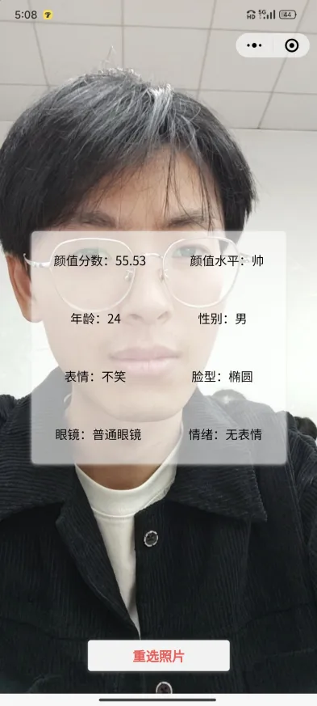
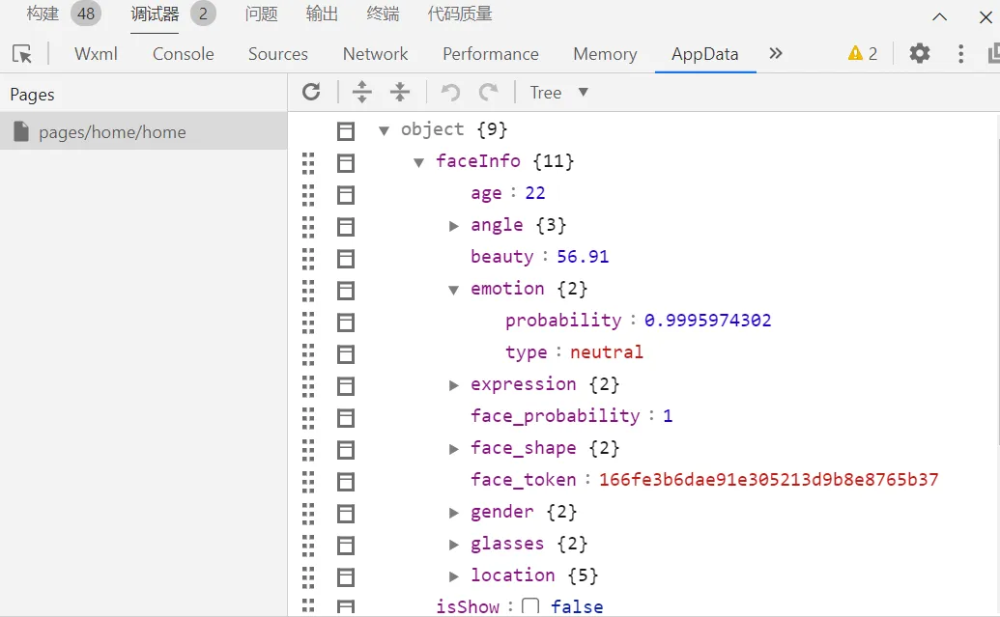

颜值测试小程序
最近闲来无事，学习了一些微信小程序的开发，自己也学着做了一个颜值测试的微信小程序，快来一起测测颜值吧！先看看效果：

效果还是可以的嘛，起码猜对了我的性别，但是颜值测得与本人严重不符，明明是很帅的好吧。
1.页面布局
整个小程序只有一个页面，就是上面的那个，很简单的对吧。看看代码：
1 | |
开始调用了 camera 标签，打开了摄像头，然后是三个按钮，分别表示镜头反转，拍照，和相册功能，并且绑定了三个函数来实现各自的功能。
接下来用一个盒子显示测试的结果，有很多属性，最后有个重选照片的功能，点击后，回到 camera 页面。
2.使用百度 api 接口
接下拉讲讲它是如何实现颜值测试的。
我是调用了百度 ai 开放平台的 API 实现的，具体的方法我就不赘述了，大家可以自行百度。
我们现在 app.js 文件中完成鉴权操作，只有鉴权成功，才可以调用 api。
1 | |
接下来最重要的就是我们获取颜值信息的函数，我们用getFaceInfo()表示。首先进行鉴权，成功之后调用 wx.request()将我们要测试的照片 post 过去，照片的要求是 Base64 格式的，这个注意一下。
接着我们在 data 中接收数据，接收成功的数据可以在 AppData 中查看
1 | |
3.数据渲染
接下来就是我们如何把数据渲染到页面上。在 Page 中，我们用faceInfo 接收人脸信息，返回的是一个对象。由于返回的数据都是数组或者英文，我们需要把他们转换成中文，比如 male 转换成 男，female 转换成女。
于是我们可以使用 map 方法存储中英文的映射关系，这样就能一一对应了，使用**map.gender[faceInfo.gender.type] **方法将英文转换为中文。
1 | |
至此，我的颜值测试小程序就写完了，你也来试试吧！
颜值测试小程序
http://example.com/2024/05/30/face/